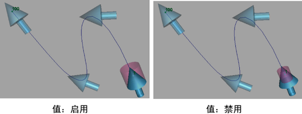
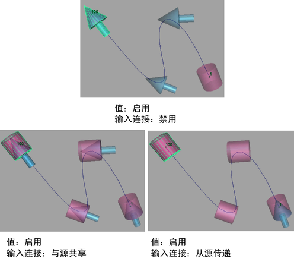

可以通过几种不同方法将一个或多个目标对象的属性值与所选源对象的属性值匹配：
- “修改 > 匹配变换”(Modify > Match Transformations)可用于快速轻松地将一个对象的基本变换属性或枢轴与另一个对象匹配。
- 通过“编辑 > 传递属性值”(Edit > Transfer Attribute Values)，还可以手动或自动匹配对象以及输入之间的大量所选属性。因此，它对于匹配动画等事物非常有用。
将目标对象的基本变换值与源对象匹配
- 选择场景中的目标对象。
- 按住 Shift 键并选择上次的源对象。
- 转到(Modify > Match Transformations)，并选择要匹配的变换类型。
将选择的常规或特定属性值从源对象传递到目标对象
- 选择场景中的源对象。
- 按住 Shift 键并选择目标对象。
- （可选）选择要传入通道盒的特定属性。
- 选择“编辑 > 传递属性值”(Edit > Transfer Attribute Values) >
 ，以设置“传递属性值选项”(Transfer Attribute Values Options)。
，以设置“传递属性值选项”(Transfer Attribute Values Options)。
- 根据需要设定选项后，选择“应用”(Apply)或“应用并关闭”(Apply and Close)。
传递属性值的示例
通过(Edit > Transfer Attribute Values)命令，可以传递的不仅仅是基本变换值。您还可以将其用于传递任何同名属性和输入/输出连接。
例如，通过其设置菜单中的“值”(Values)选项，可以将所有同名属性从源复制到目标。在以下示例中，如果启用“值”(Values)，系统会将比例属性从箭头复制到圆柱体。如果禁用“值”(Values)，圆柱体将保持其原始尺寸。

注： 圆柱体仍随箭头旋转和平移，无论“值”(Values)是否已启用。这是因为“输入连接”(In connections)选项已启用，且这些属性与曲线相连。
“输入连接”(In connections)选项可用于将所有传入连接从源节点复制或传递到目标节点。这对于分别将动画从一个对象复制或传递到另一个对象非常有用。您可以在以下示例中看出这些差异：
- 如果禁用“输入连接”(In connections)，圆柱体将复制箭头的初始值，但不会创建动画，因为圆柱体的移动与曲线的输入存在依存关系。
- 如果“输入连接”(In connections)设置为“与源共享”(Share with source)，箭头和圆柱体均会创建动画，因为它们均具有来自曲线的传入连接。
- 如果“输入连接”(In connections)设置为“从源传递”(Transfer from source)，只有圆柱体会创建动画，因为传入连接已从箭头移动到圆柱体。

与传入连接不一样，您只能传递传出连接。